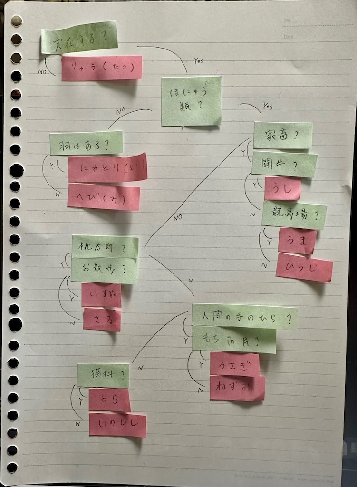

ゲーム作成
十二支の動物アキネーター
ゲームの流れは、
1. 実際のアキネーターと同じようにコンピュータが質問をする
2. 回答者が「はい」か「いいえ」で答える
3. 繰り返していき、特定
実際のアキネーターの仕組みは人工知能が関わっているらしく、実現できないので
答えの範囲を「十二支」に絞り、樹状図のように特定していきます
手書き構成
こんな感じで付箋に書いて、動かしながら構成を考えました。

質問を考えるのに一番時間がかかりました。
- 誰が答えても同じ答えになる
- 総当たり感をなくす
を両立させたくて、
質問を考えて(50個くらい)、これだとこの可能性があるからだめ、これだとこの動物が微妙だからだめ
と、結構思案して今の質問に行きつきました。
この二つの項目はこの形式のゲームとしての最低限のラインだと思うので、たくさん考えたけど、
難しかったです。
授業外で学んだこと
・左辺から右辺へ代入したいときは「=」、数字のイコールとして使いたい時は「==」
・「break」でゲーム終了
・「continue」で最初から
・「"」と「:」の忘れやすさ
参考
先輩たちのコード